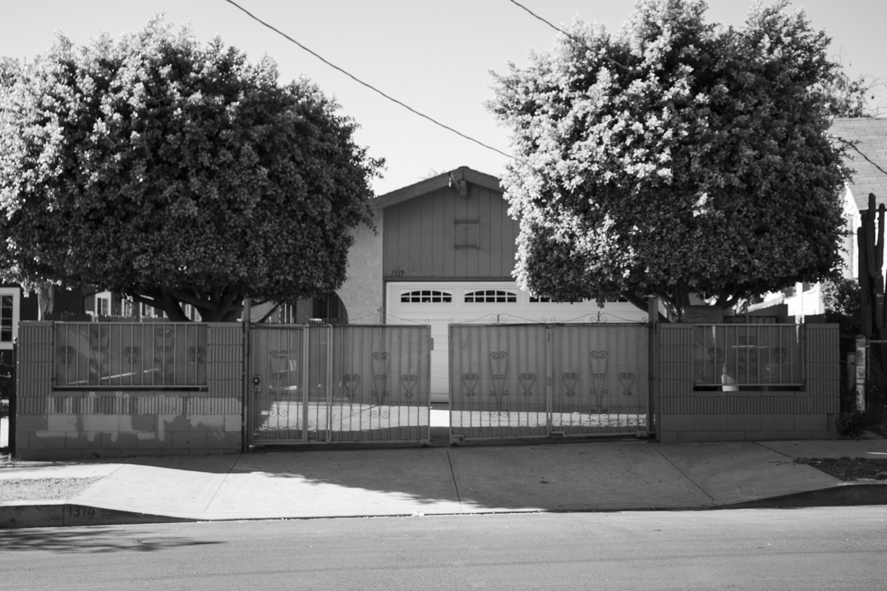
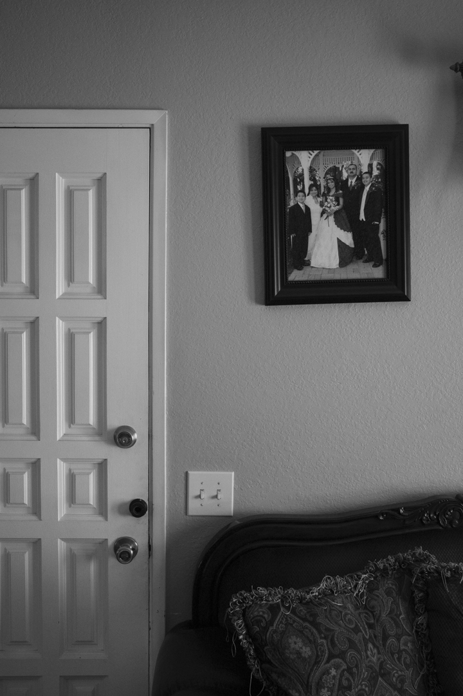
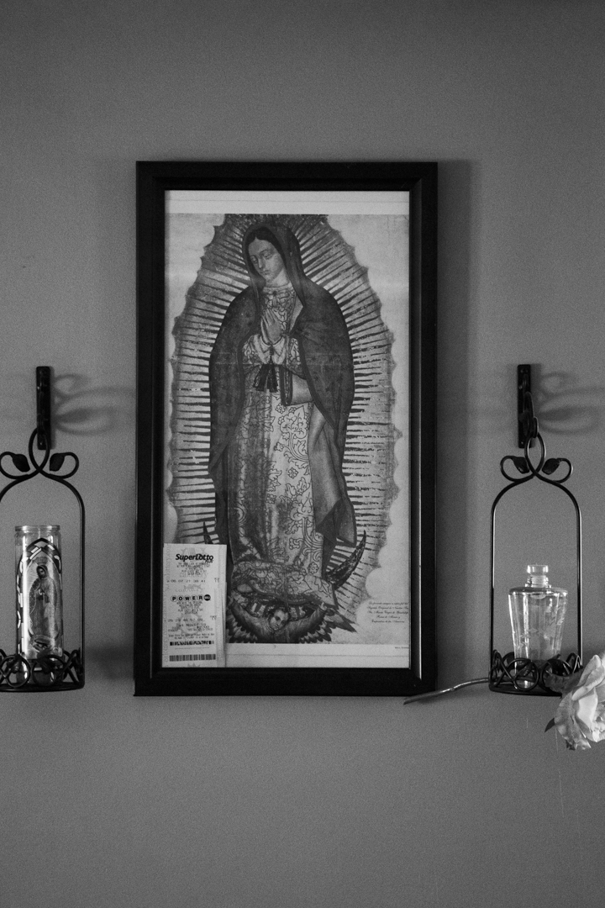
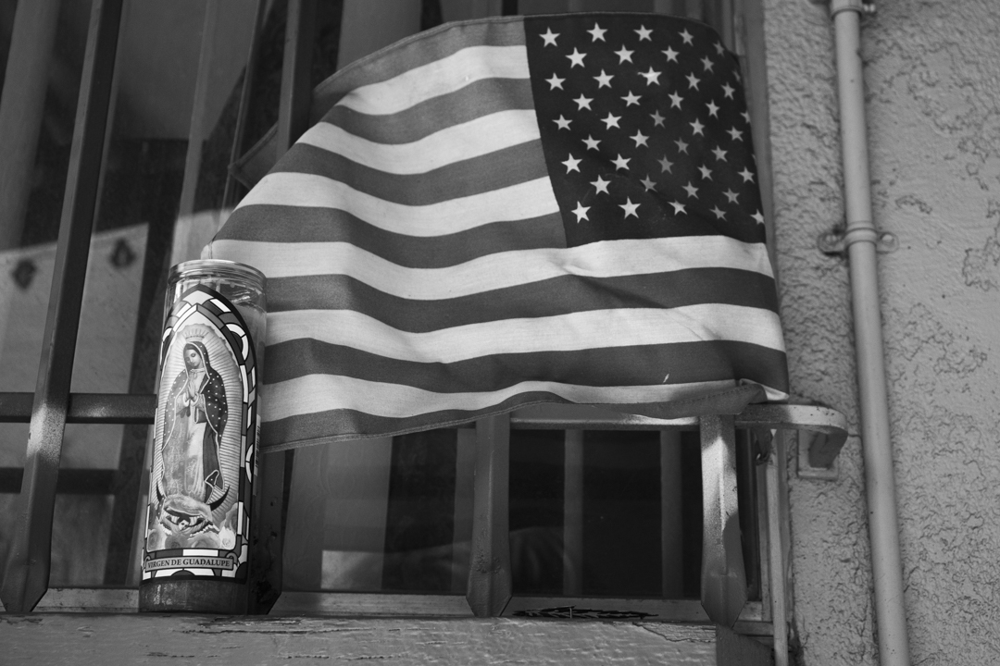
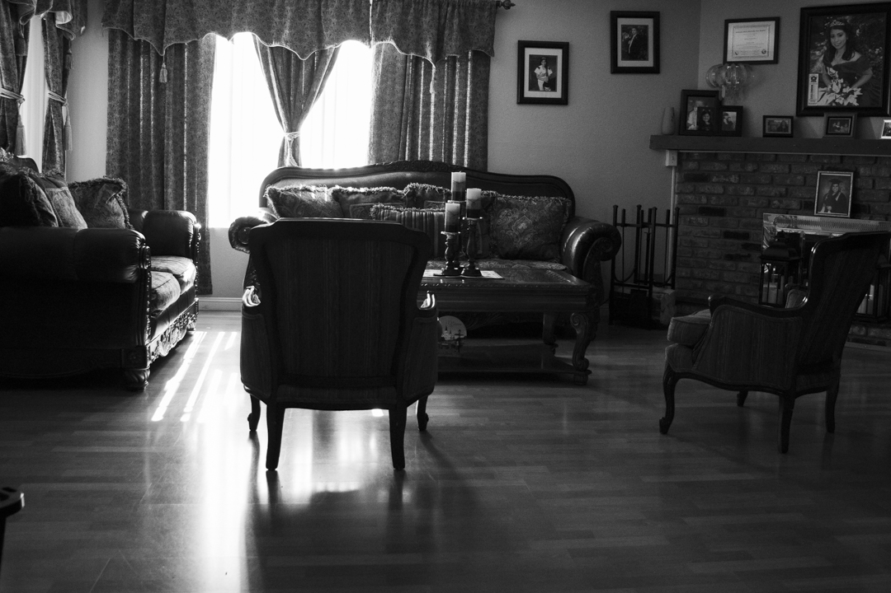
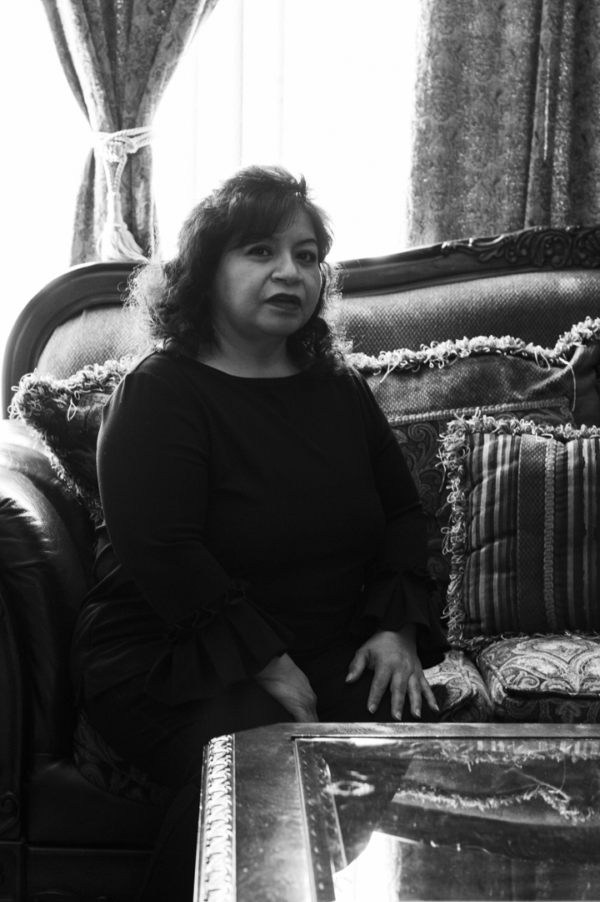

A Complete Portrait
Photo Series





Rational
For this portrait series, my chosen subject was my mother. As one of her sons she has had a great influence on the person I am today. To give a bit more context my mother raised me, my brother, and sister by herself for most of our lives. My father was present in the beginning, but he eventually left the family in America and went to Mexico also cutting off most of our contact with him as well. For a long time I knew, and still know my mother as my only parent. Thus I wished to capture her identity accurately in this series.
The first image I chose was that of the font of my mother’s house in Highland Park, CA. This is the only house my mother has truly owned, having rented an apartment before. Though the house can be considered quite large by most standards, what I wished to show was a smallness to it, hence the very large trees blocking much of the house. This is our family’s, and mostly my mom’s little corner of the world. A place she puts a lot of effort (and money) into maintaining. This is her private abode where she raised her children and has learned to live in America.
The next image depicts a framed photo of our entire immediate family. As mentioned earlier my father was present for an early portion of my life. It was at this time my sister had her quinceanera, a mexican traditional celebration for the coming of age for girls turning 15. This photo is the lone snapshot of that time of our family present in the entire house. Though I never asked her about it, I think it is the idealistic view my mother has about how our family was. A complete family. Though my siblings, myself included, don’t tend to think much of this image, perhaps it serves my mother the simplicity of remember those days, whether they were better or not to her none truly know.
The next photo moves back outside, and tackles my mother’s personal identity. Having lived in America for some time now. My mother does show a bit of what may be considered patriotism. The American flag is one decoration she is fond of, despite having a few like the small one shown here, she has wished for a larger one that could be displayed at the front of the house. That being said she still holds on to her mexican heritage, depicted here by a candle with the Virgen de Guadalupe, an iconic figure for mexican catholics, of which my mother is one. This photo is meant to capture both of those identities into one, that is representative of my mom.
The fourth photo expands a bit more onto the level of faith my mother has. This is a wall in our home that is dedicated to the Virgen de Guadalupe. I don’t think it's hard to believe that my mother has the most faith, aside from my grandmother, from the list of people living in her home. This faith was something that she attempted to pass through her children. Though it may have had a different effect than what she hoped for, it was a part of our live as much as it is hers. She still hold onto faith as a component of her life, so much so that this is also where she holds her and my grandmother’s lotto tickets. I would assume this was a satirical decision she’s made but it is where they have gone since my grandmother in particular began playing.
The photo of the living room is probably the most representative of her life right now. The living room is the space that my mother truly shows herself in. It is a space all her own that is shown off to the people that enter the home to get a general sense of the person she is.
One can deduce the longing of an almost vintage look to the room showing her appreciation for details and accents. Along the right side of the image one can find the fireplace where many frames are held, showing my mother’s want of keeping not only snapshots of past times, but also of extended family that have been near and dear to her along with her three children. But the biggest revelation that the living room has, is the emptiness. Now a days, my mother finds herself more alone than ever. My sister works late into the afternoon, my brother stays out of the house with work and various errands he attends to, and I myself am in another place at college. The three people that filled her day almost everyday have slowly become less and less of that time frame, and so though she may not admit it, I know she finds herself lonely at times.
The last image of course if a portrait of my mother. It is taken in her own space the living room of the house. Though this image is made more intimate by cutting off much of the room and focusing on her. This is the most common way she also presents herself, simple clothing, and minimal touch up to herself. I chose to show her appearance last because I find it more interesting and definitely more stimulating when as a viewer I am given aspects of a person before knowing their appearance. It creates an interesting dynamic between the expected and the presented. I want the person of my mother known before the preconceived ideas that form in our minds are placed and so this series end with my mother’s portrait rather than begin